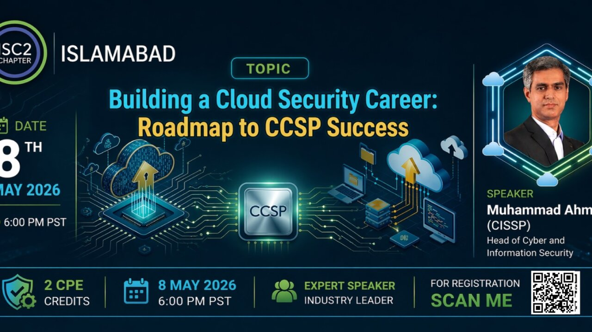
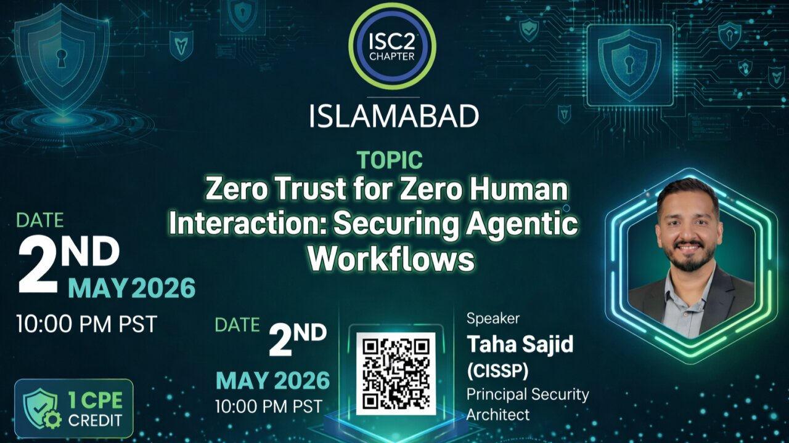
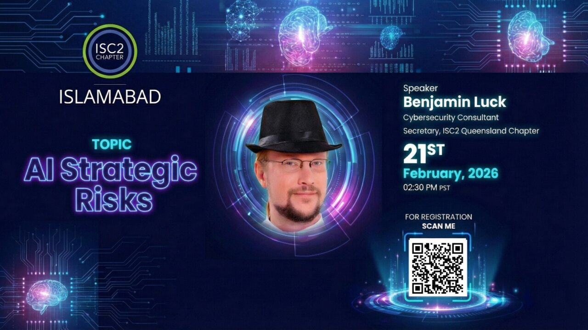
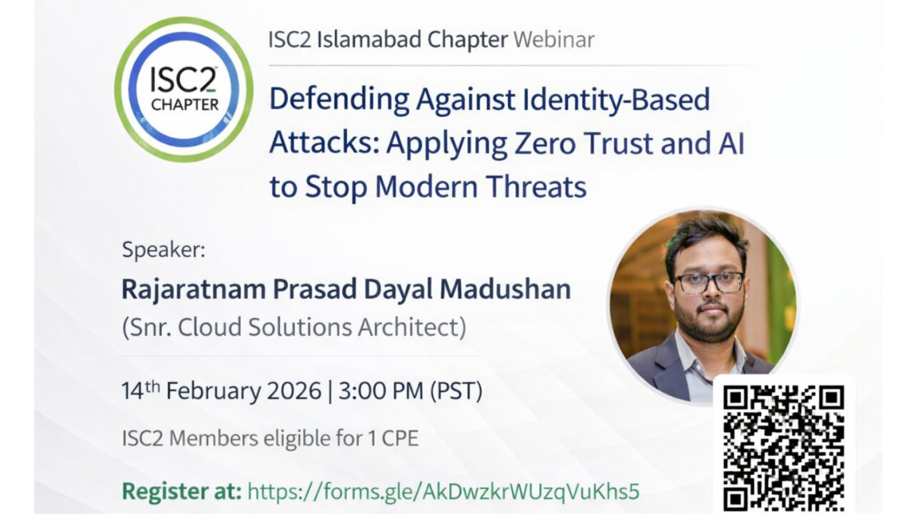
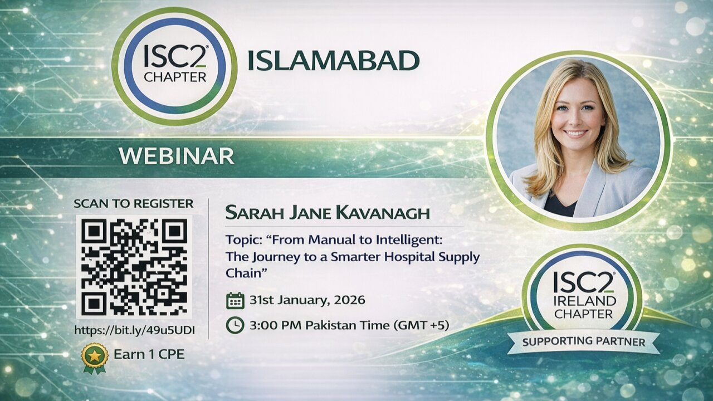

Events
Upcoming Events
Stay tuned for our upcoming events. We regularly host webinars, workshops, and networking sessions for cybersecurity professionals in Islamabad.
Past Events
Here are some of the events we have hosted in the past. Check back frequently as we update this section with more past activities and insights.

Building a Cloud Security Career: Roadmap to CCSP Success
Date & Time: Friday, May 8, 2026, 6:00 PM - 8:00 PM PST
Format: Online
Certified Cloud Security Professional (CCSP) certification equips professionals with the expertise to design, manage, and secure cloud infrastructures effectively. With cloud security becoming a top priority across industries, CCSP-certified professionals are uniquely positioned to unlock high-demand career opportunities and lead the next generation of secure digital transformation.
Led by Muhammad Ahmad (CISSP, CCSP), an accomplished Cybersecurity, GRC, Privacy, and IT Governance leader with 18+ years of progressive experience, this talk provided a clear vision and roadmap to achieve the CCSP exam.
CPE Credit: 2 CPE

Zero Trust for Zero Human Interaction: Securing Agentic Workflows
Date & Time: Saturday, May 2, 2026, 10:00 PM - 11:00 PM PST
Format: Online
As organizations increasingly adopt automation and AI-driven systems, traditional security models are no longer enough. This session explored how the Zero Trust framework evolves to secure environments where human involvement is minimal and autonomous agents operate critical workflows.
Led by Taha Sajid (CISSP), Principal Security Architect, this talk dived into practical strategies, real-world challenges, and modern security architectures designed to protect agentic systems, APIs, and automated decision-making pipelines.
CPE Credit: 1 CPE

AI Strategic Risks
Date & Time: Saturday, February 21, 2026, 2:30 PM PST
Format: Online
Gain expert insights into the strategic risks of Artificial Intelligence and how cybersecurity leaders can prepare for emerging threats.
Led by Benjamin Luck – Cybersecurity Consultant & Secretary, ISC2 Queensland Chapter.

Defending Against Identity-Based Attacks
Date & Time: Saturday, February 14, 2026, 3:00 PM PST
Format: Online
Identity‑based attacks are evolving—and so must our defenses. Join us for an expert‑led session on credential theft, MFA fatigue, lateral movement, and insider threats. Explore how identity‑centric Zero Trust models combined with AI‑powered detection can mitigate modern cyber risks.
Led by Rajaratnam Prasad Dayal Madushan – Snr. Cloud Solutions Architect.
CPE Credit: 1 CPE

From Manual to Intelligent: The Journey to a Smarter Hospital Supply Chain
Date & Time: Saturday, January 31, 2026, 3:00 PM PST
Format: Online
ISC2 Islamabad Chapter Webinar featuring Sarah Jane Kavanagh, Programme Lead at St James's Hospital Dublin. Topic: From Manual to Intelligent: The Journey to a Smarter Hospital Supply Chain.
Led by Sarah Jane Kavanagh, Programme Lead, St James's Hospital Dublin.
CPE Credit: 1 CPE